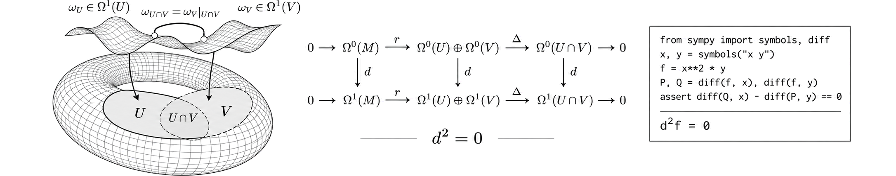

I'm a software engineer specializing in distributed systems, database internals, and correctness.
I work at AiFi. Previously at ScyllaDB and poolside, I've worked on consensus protocols, database control planes, and infrastructure for training programming models. I'm also interested in programming languages, formal verification in Lean, and the connections between mathematics and software, including AI-assisted mathematical research.

Projects
Noemesis
Research framework · Python · Lean 4 · AI agents
A framework for autonomous mathematical research: it runs an AI agent (Codex CLI or Claude Code) on an open problem for weeks at a time and keeps the result inspectable. Every claim has a status in a structured registry, every argument is reviewed by a second, fresh-context agent, selected results are verified in Lean, and the rules the agent works under are enforced by programs rather than by its good intentions.
The research record is an append-only notebook in Git, published automatically through GitHub Actions; computations run under resource limits with their output and timing saved as evidence. Work in Noemesis produced a proof-complexity lower bound whose main results are formalized in Lean 4.
A distributed key-value store with strictly serializable transactions, built on LPaxos: my replication algorithm for building fault-tolerant, linearizable services without replicated logs.
I developed the algorithm and implementation as part of my master's work in computer science. LattiStore includes a small transaction language and a runnable multi-node setup. It is a proof of concept; persistent storage is not implemented.
Android apps, proven: write an app's state, behavior and UI in Lean, prove properties of that code, and compile it into the app, so the code you prove is the code that runs. A small Kotlin host renders native Android Views and Canvas drawing and performs platform effects.
The architecture follows Elm's model/update/view loop and Roc's separation of application logic from platform effects. Examples include SnackNet, a maze-chase game written entirely in Lean.
I contributed to Motions as part of my bachelor’s project: a Markov Chain Monte Carlo simulation of chromatin movements within a cell nucleus, modelling DNA–protein interactions. The project brings together mathematical modelling, scientific computing, and functional programming.
A Linux driver for the HardDoom II PCI device, implemented as a university operating-systems project. It handles asynchronous command submission, DMA buffers, interrupts, and device resource management.
An experiment in translating Haskell to C++ using Conal Elliott's “Compiling to Categories” approach. It explores the connection between functional programming, category theory, and code generation.
Superpolynomial size lower bounds for resolution over parities, Res(⊕), were previously known only for restricted refutations: tree-like, regular, or of bounded depth. The paper proves that every DAG-like Res(⊕) refutation of the bit pigeonhole principle has 2Ω(n/log² n) clauses, with no restriction on regularity or depth.
The main theorem and all its dependencies are formalized in Lean 4. The proof was developed with substantial AI assistance in Noemesis.
My thesis develops LPaxos, the distributed algorithm behind LattiStore. I wrote the thesis and developed the accompanying software; my advisor, Janina Mincer-Daszkiewicz, reviewed the thesis.
Co-authored with Krzysztof Pszeniczny, this thesis introduces persistent homology for computer scientists and data analysts: a way to study the shape of data by tracking topological features across scales.
Assuming only basic linear algebra, it develops the necessary topology and algebra, then explains persistence modules, barcodes, and an algorithm for computing persistent homology of a filtered simplicial complex.
I designed the rollout framework that keeps AiFi’s fleet of autonomous stores on the current release with no one driving it, together with a Lean model of its admission rules and an AI advisor for its rollout policy.
I led a five-person engineering team responsible for much of the core database’s control plane, particularly schema and topology management. As a core maintainer with merge authority, I reviewed and gated contributions across multiple subsystems.
At AiFi, the rollout controller works like the thermostat in your home: it compares what each store should run with what it runs, writes per-store version pins to Git, syncs the store through Argo CD and verifies the result, opening a release to lab stores, then canaries, then the rest of the fleet. The Lean model proves that a pre-release never reaches a store, that canaries open only after labs of both store kinds pass, and that the fleet never exceeds its limits on changes in flight. The AI advisor proposes canary sets and policy overrides built from evidence read by deterministic queries; a check refuses any summary stating a number the evidence doesn’t hold, and only a person’s acceptance changes the policy.
At ScyllaDB, I worked on the core of a distributed database: moving cluster management to Raft consensus, improving query performance, and supporting topology changes in Change Data Capture. I also built testing tools to find correctness bugs in distributed algorithms and used TLA+ to specify parts of the control plane.
Education
I hold an M.Sc. in Computer Science (2020), a B.Sc. in Mathematics (2018), and a B.Sc. in Computer Science (2016), all from the University of Warsaw. I also studied mathematics at the University of Copenhagen on an Erasmus exchange in 2017–2018.